Gentle
One soft chime and a notification when the adhkaar open. It doesn't ring again.
- Good
- Calm and never in the way. For when the habit is already yours.
- Keep in mind
- Easy to swipe away and forget.
For Android · Free · No ads, no account
Adhkaar opens the morning and evening remembrance right after Fajr and Asr are prayed, while your phone is in your hand. Choose how firmly it holds you to them: a gentle chime, the adhkaar on your screen, or other apps paused until you're done.
Six languagesWorks offlineNigerian moon sighting1,231 daily reminders
5:30Fajr · reminder
Everything hangs off the salah times you set. The app starts with common local times; change them to your masjid's and they replace the defaults completely. The adhkaar open after the prayer has been prayed in congregation, not the moment its time begins.
Default times shown. Congregation is taken as 20 minutes after each time; the morning opens 10 minutes after it, the evening 30.
6:00Morning adhkaar open
The mode applies to the morning and evening adhkaar only. Everything else in the app is a notification.
One soft chime and a notification when the adhkaar open. It doesn't ring again.
The adhkaar open by themselves, even on the lock screen. The alert rings for a minute, once more ten minutes later, then they return every time you unlock.
Like Full screen, and other apps are covered until you finish or the adhkaar time ends: 7:30 AM in the morning, Isha in the evening. Calls and emergencies always work.
6:10Busy moment
If you truly can't read now, pause for 10, 20, 30 or 60 minutes. Only breaks that end before the adhkaar time closes are offered, so they're still said today. Before it pauses, the app asks once more, gently.
"Just 9 adhkaar left. A few minutes, and today's adhkaar are done."
"You have kept them for 22 days in a row. Don't let today be the gap."
Pausing takes a five-second press and hold that fills as you hold, felt as well as seen. Let go and nothing happens.
مَثَلُ الَّذِي يَذْكُرُ رَبَّهُ وَالَّذِي لَا يَذْكُرُ رَبَّهُ مَثَلُ الْحَيِّ وَالْمَيِّتِ
The one who remembers his Lord and the one who does not are like the living and the dead.
Sahih al-Bukhari 6407
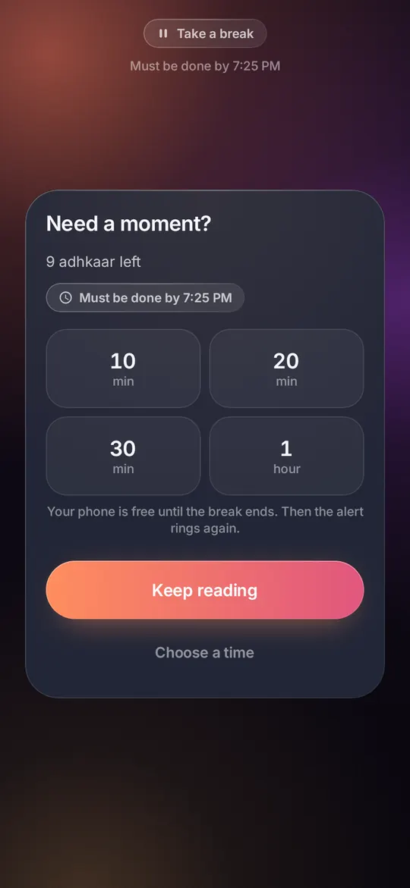
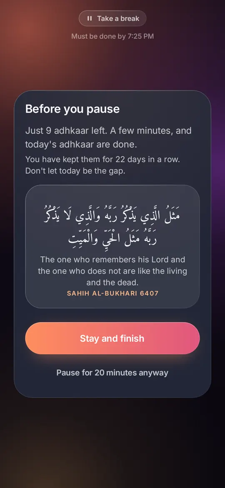
1:00Dhuhr · reminder
At each time you set, a frosted card comes up over whatever is open, or over the lock screen, with a chime at alarm volume and a vibration you feel in a pocket. It's worded as a reminder to get ready, so it can't pass for the adhan.
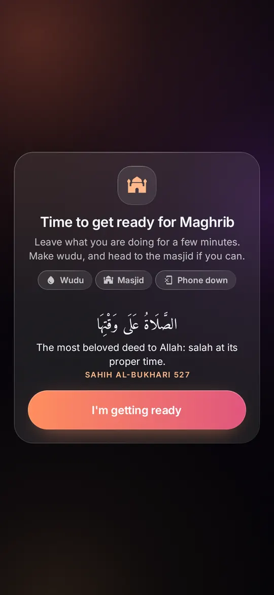
Wudu · Masjid · Phone down. What getting ready means, right now.
الصَّلَاةُ عَلَى وَقْتِهَا
The most beloved deed to Allah: salah at its proper time.
Sahih al-Bukhari 527
On the Today screen a salah shows as "Now" for 30 minutes from its time, through the congregation, then the next one lights.
Tap any time on the Salah reminders page to change it, and switch each reminder on or off.
1:20After Dhuhr
Beyond morning and evening, the collections come with their own reminder at their own time. They're read the same way: tap to count, and each moves on by itself when its count is reached.
Istighfar, Ayat al-Kursi, tasbih, and the three Quls, counted three times after Fajr and Maghrib.
The last two verses of al-Baqarah and the duas for lying down. On by default at 10 PM.
What the Prophet ﷺ said when he woke.
Leaving home, eating, travelling and the other moments of the day.
Add your own and place them after the morning or evening adhkaar.
Keep the ones you return to, and listen to the recitation while you read.
3:00A quiet hour
Each day brings one verse or hadith from 1,231, in the order of the days, shown exactly as published by Tanzil, QuranEnc and HadeethEnc. Special days bring their own: Jumu'ah, the white days, Ramadan, 'Ashura, Arafah.
Hijri and Gregorian side by side. In Nigeria it follows the moon sightings announced by the NSCIA, and calculated dates everywhere else.
Turn the day's reminder into an image in dawn, midnight or parchment, ready for WhatsApp.
Your streak, the month at a glance, and which weekdays slip, so the habit is something you can see.
Next adhkaar, today, the Hijri date, the sky, your streak, a dhikr and a collection, each in three styles.
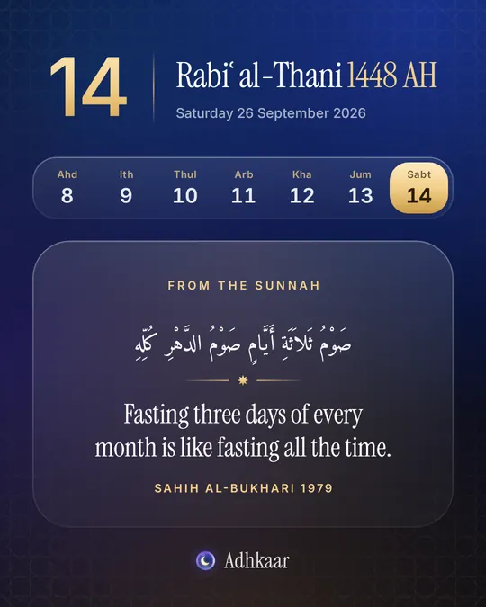
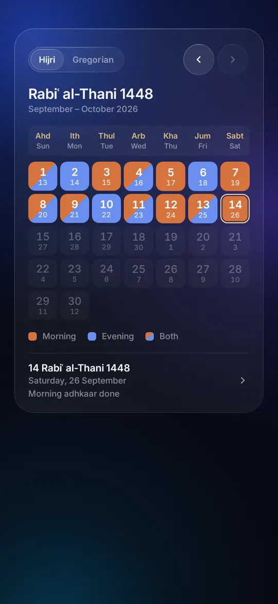
4:45Evening adhkaar open
The whole app, including this guide's wording, in six languages. The Arabic of the adhkaar is never translated; the meanings are shown in English for now while native reviewers check each language.
6:35Maghrib · reminder
Rendered straight from the app's code.
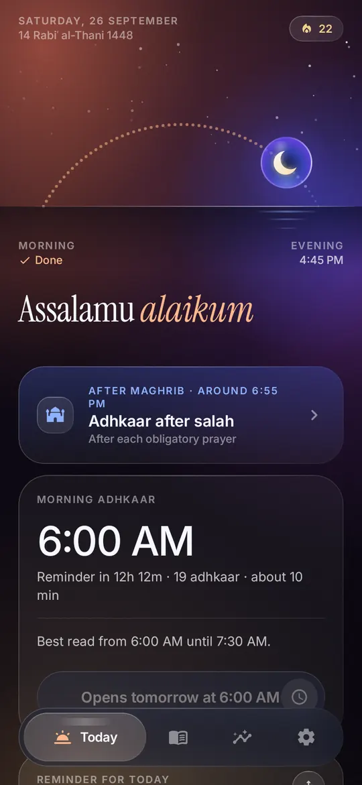
Today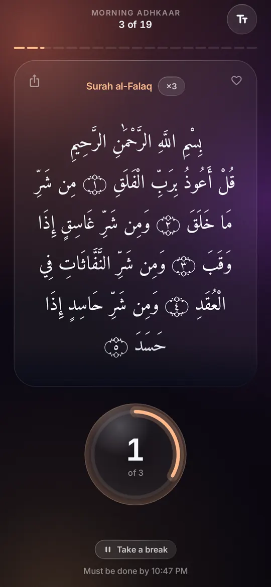
Morning session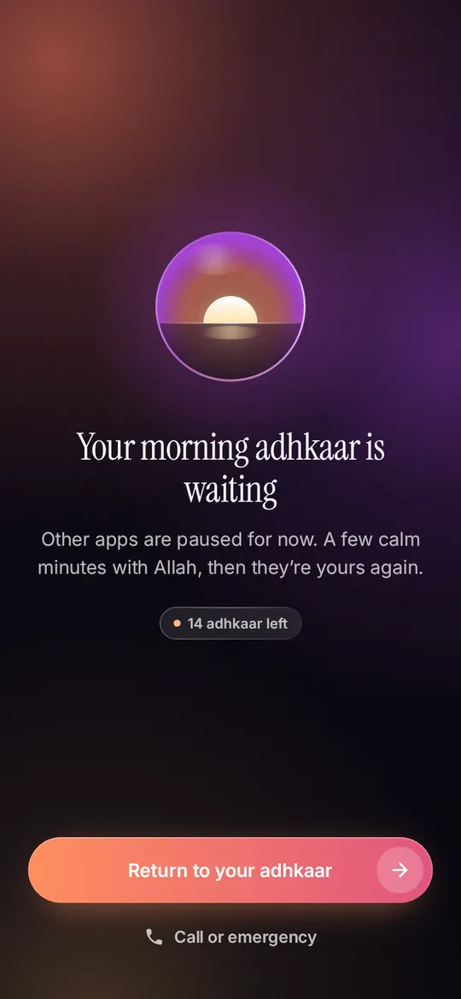
Lockdown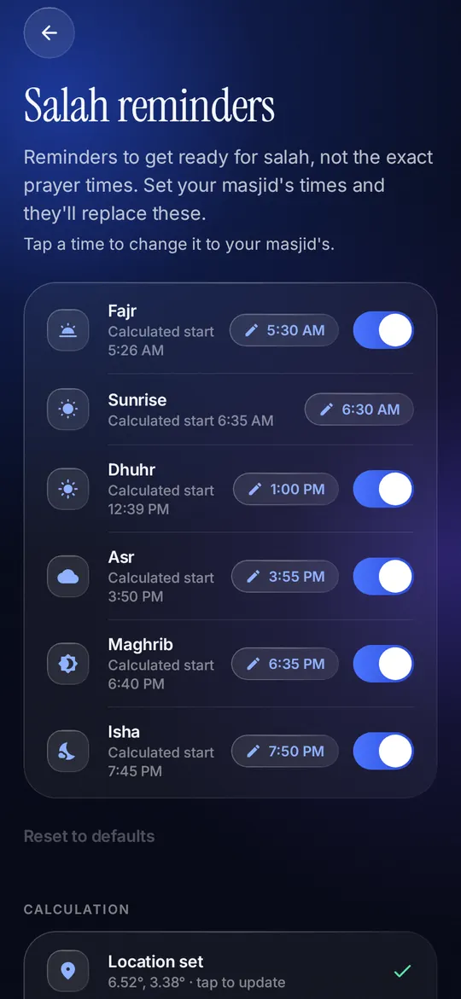
Salah reminders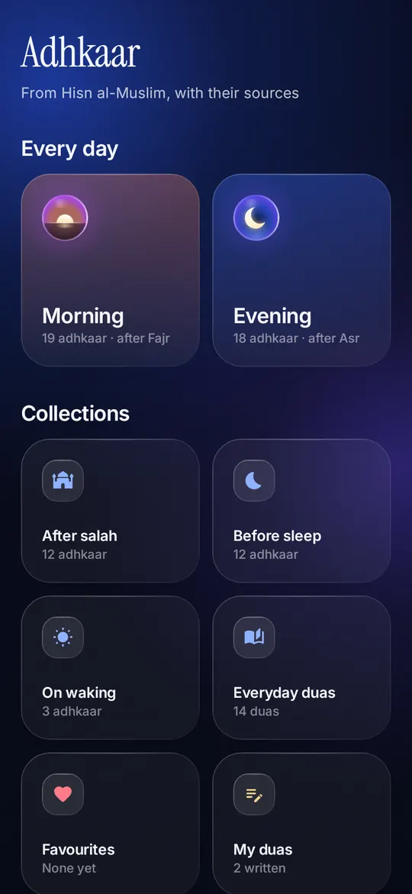
Adhkaar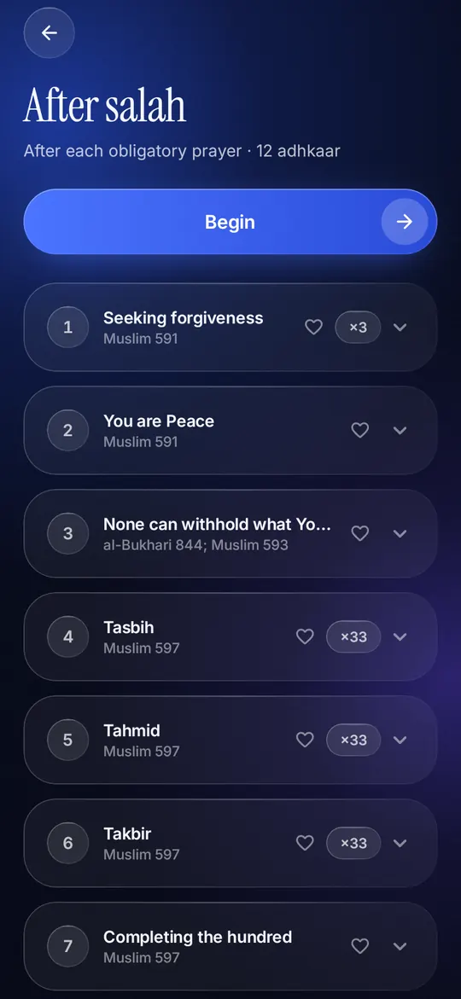
After salah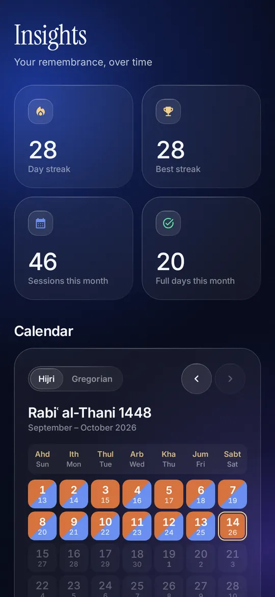
Insights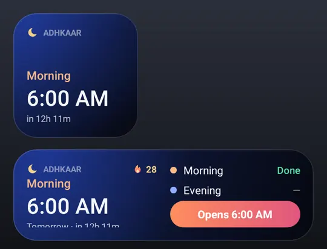
Widgets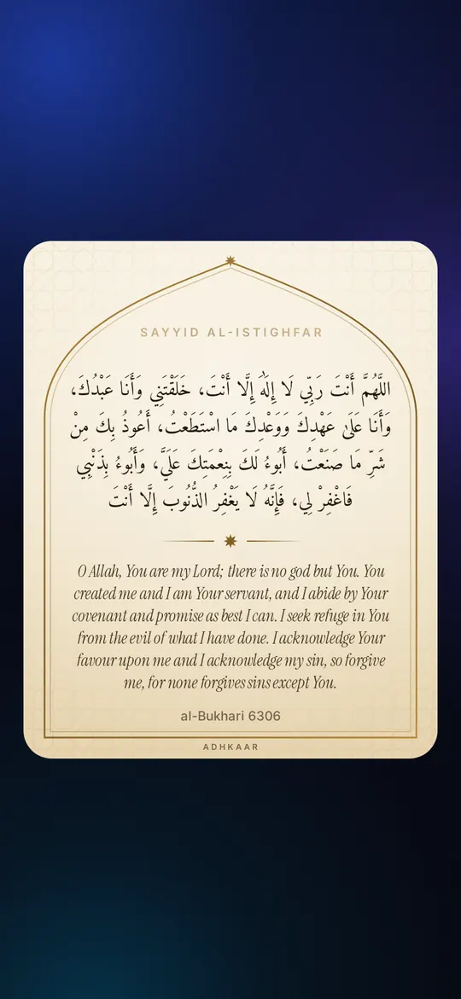
Share card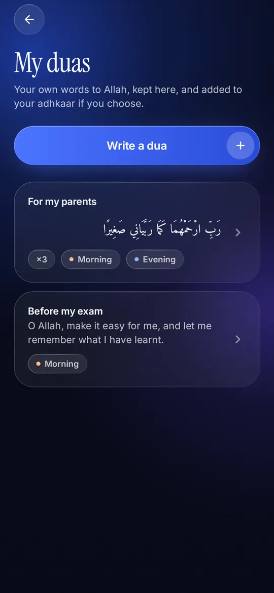
My duas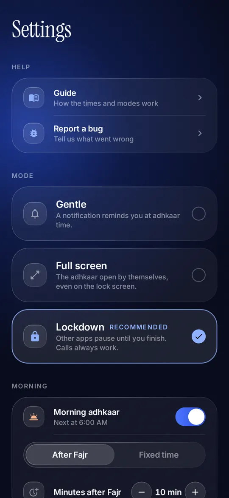
Settings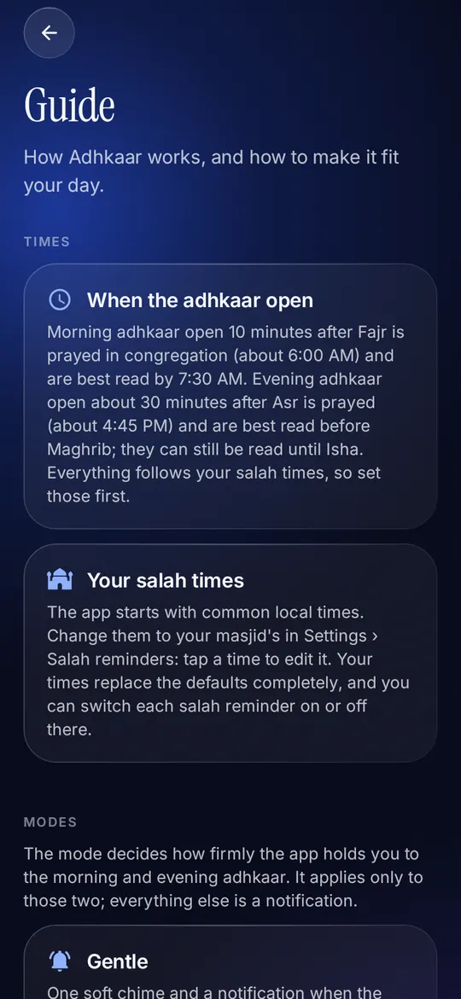
Guide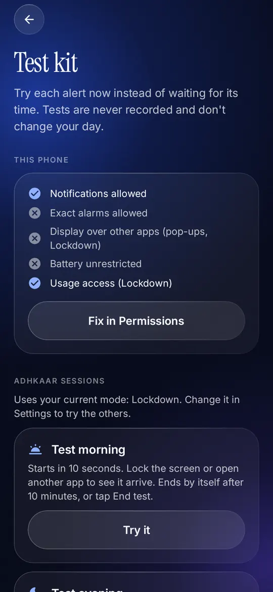
Test kit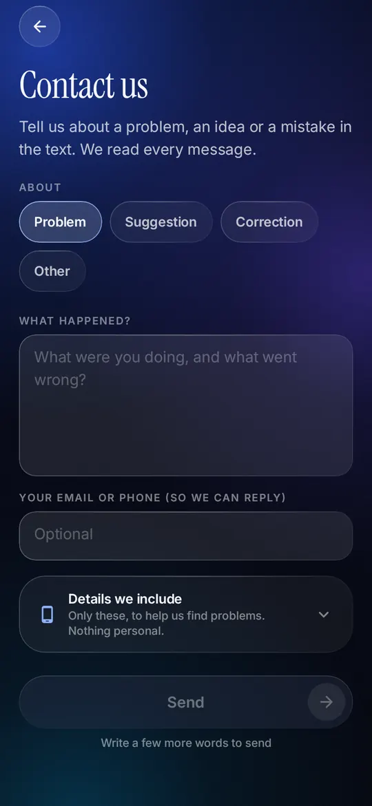
Contact us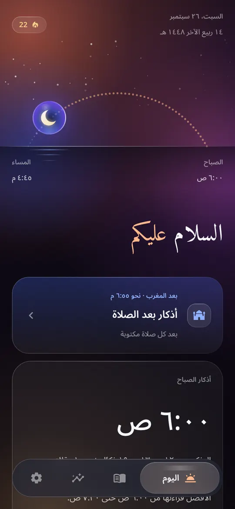
Arabic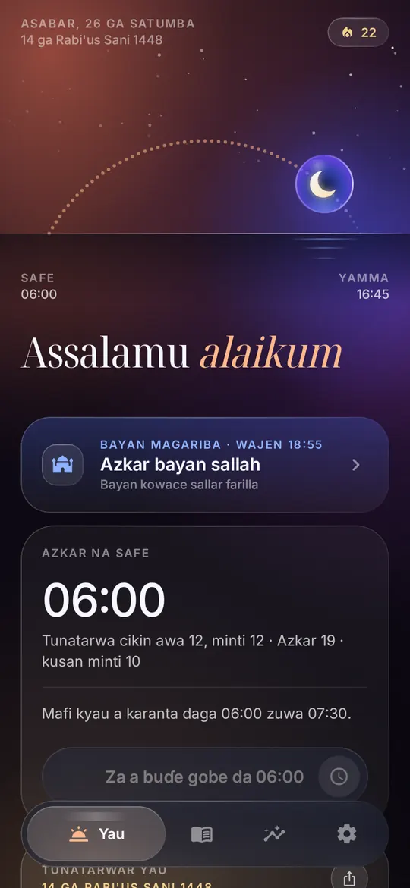
Hausa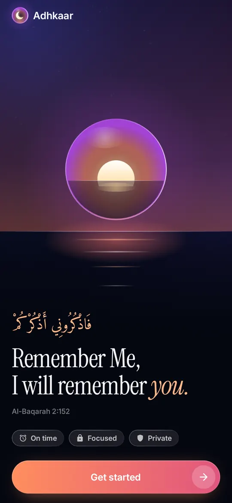
Welcome7:50Isha
The code is on GitHub for anyone to read and improve. Religious text changes only with a content reviewer's approval and a cited source: a book and number, or the publisher's page.
No account, no analytics, nothing sold. Your data stays on your phone.
The only thing it ever downloads is the moon-sighting list.
Even in Lockdown, the phone and emergency are one tap away.
Qur'an text from Tanzil and meanings from QuranEnc and HadeethEnc, never edited here.
Code under PolyForm Noncommercial 1.0.0, content under CC BY-NC-SA 4.0: free to use and share, not to sell.
A guide, a test kit that tries every alert in ten seconds, and Contact us, all inside Settings.
10:00Before sleep
The Android app is in testing now. Google Play comes next, then iPhone.
Ask for the test APK, or build it yourself from the code. Android 8 or newer.
Open on GitHubAfter the testing round, through closed testing to a public release.
A native iOS app is planned. Until then, try the simulator at the top of this page.
Try the simulatorTest on your phone, review content, translate, record audio or write code.
How to contribute